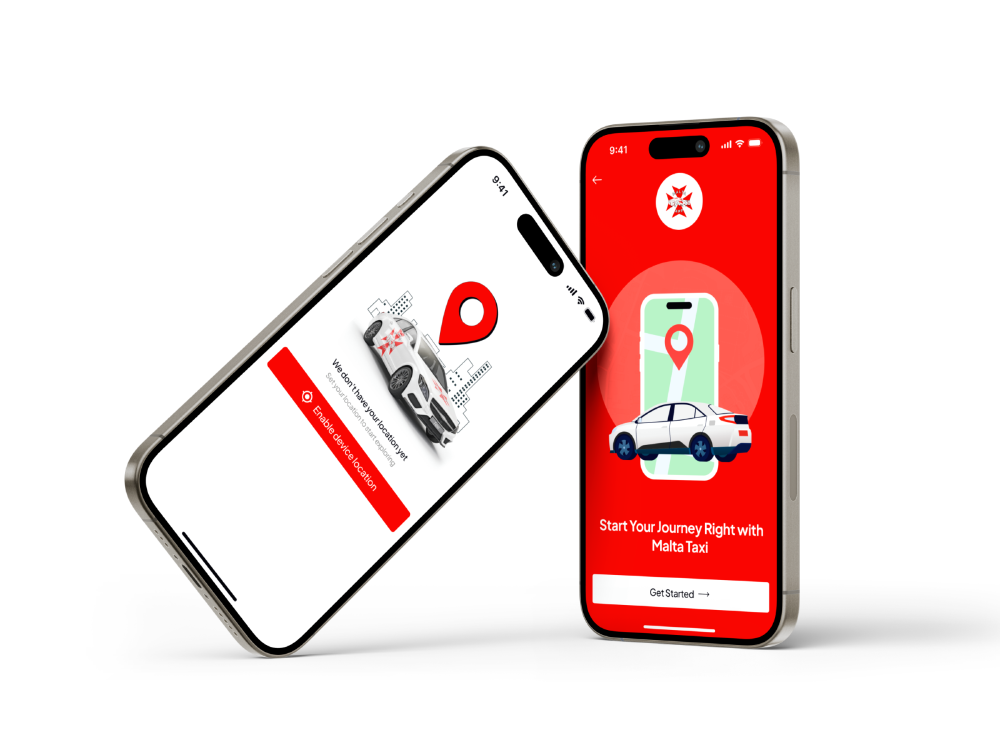

Quick and hassle-free taxi booking
The booking flow is the product. Anything that isn’t needed to get a car moving was pushed out of it.
A taxi booking app for a country most of its riders are visiting for the first time — built around knowing the price before you commit, watching the car actually arrive, and a booking flow short enough to finish on a kerb.

Overview
Malta’s riders are disproportionately tourists: people who don’t know the street names, don’t know what a fair fare looks like, and have no way to tell a reliable driver from a chancer. Every one of the design decisions below comes back to that — the app has to earn trust from someone with no local knowledge to check it against.
The problem
Users in Malta, especially tourists, face difficulty booking reliable taxis quickly. The lack of clear pricing, real-time tracking, and a simple booking flow creates confusion and reduces trust.
They are not three separate complaints. Not knowing the price is what makes the wait feel risky; not being able to see the car is what makes the price feel like a gamble; and a booking flow that takes too long gives both of them the time they need to turn into a cancelled ride.
So the fix could not be three features bolted on separately. It had to be one sequence in which each answer arrives before the doubt it settles.
User needs
The five needs the design was held against. Each card below is one of them, in the deck’s own words, with the design consequence underneath it.
The booking flow is the product. Anything that isn’t needed to get a car moving was pushed out of it.
The fare is shown while the ride is still cancellable, not after. Trust is decided in that gap.
A live map with the nearby taxis on it, so the wait is something you can watch rather than something you endure.
Destination search that works for someone who can’t spell the street they want — the tourist case, treated as the default.
Onboarding sets location up front, so the first screen after it is already useful instead of asking for a permission mid-task.
The solution
A taxi booking app that takes the guesswork out of the ride. These are the deck’s four, sequenced the way a rider actually hits them rather than listed by feature.
Location is asked for once, up front, with the reason attached — so no later screen has to stop and ask mid-task.
The wait becomes visible. Cars on a map answer “is one actually coming?” before the question is asked.
Search built for someone who can’t spell the street, and a confirmation step that shows the fare while cancelling is still free.
The feature that treats a tourist as a tourist rather than a commuter who happens to be lost — places to go, not just a field to fill.
Research & process
Empty on purpose. This is where the research method belongs — who was spoken to, how many, and what was tested. Slide 01 of the deck states the five needs but not where they came from, and the remaining slides could not be exported (the Figma account hit its Starter-plan MCP quota mid-read). Numbers here would have to be invented, and a hiring manager will ask. Fill it from the deck, or delete the section.
Colour
Read off the screens rather than chosen next to them: the app render was decoded and its opaque pixels counted, so these five are the artwork’s actual palette in order of area.
Screens
Both of these come before anything is booked, and both exist to answer the fifth need: the app should be useful the moment onboarding ends, not ask for a permission in the middle of a booking.
Two screens, not the flow. The map, the fare confirmation and
the tour exploration feature are all named in the solution above but
aren’t in the exported artwork. Export them from the deck into
public/MaltaTaxi/ and they belong here, in booking order.
Outcome
A complete mobile app design for iOS and Android covering onboarding, location setup, the live map, destination search and booking, and a tour exploration feature for travellers — with the brand’s Maltese cross and its single red carried through all of it.
No results numbers here, and that is deliberate. Booking completion, time-to-book, drop-off at the permission screen — any of those would make this section, and I don’t have them. If they were measured, they go here; if they were never measured, saying “design delivered” and stopping is the stronger move. Invented metrics are the ones you get asked about.
The original slides carry the screens this page is still missing.